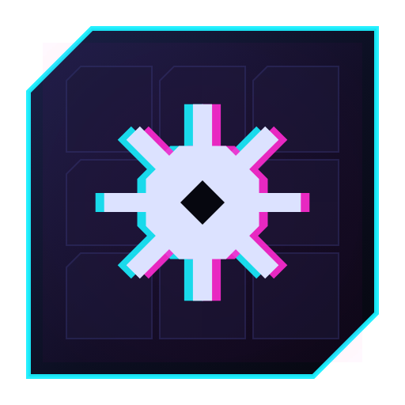
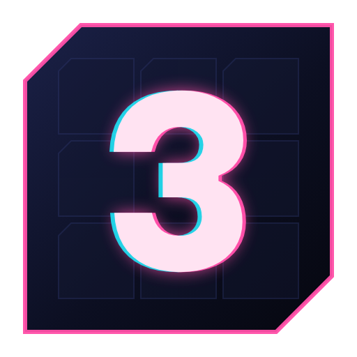
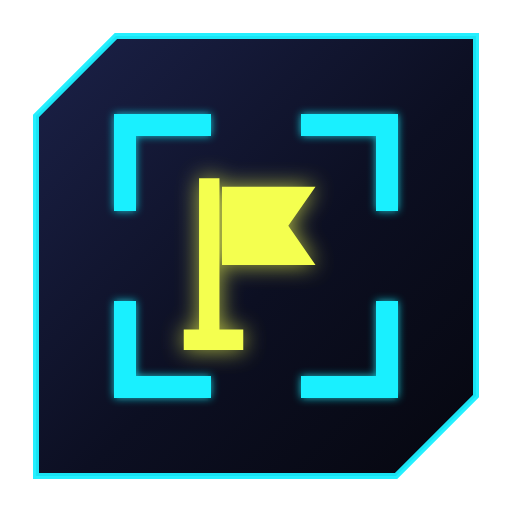

Three directions on the same chamfered plate. Black ice is the pick: the mine says Minesweeper, the chromatic split says cyberpunk, and it still reads at 16px thanks to a simplified small variant (icon-small.svg) used for 32px and below.

A mine on a field of encrypted chips, split cyan and magenta like a glitch.

The score mechanic as a mark. Sharpest at tiny sizes, but less obviously a mine game.

The in-game cursor brackets around a flag. Loud on a taskbar, quieter on meaning.